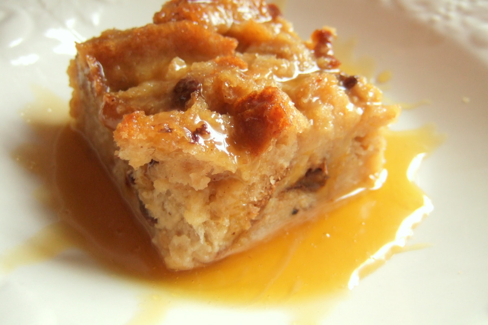

Home
Bread Pudding

Description
Bread pudding is one of my all-time favorite desserts. From its humble origins as "poor man's pudding" in the 11th century, it has gained popularity around the world and continues to be embellished and improved upon by daring chefs across the globe.
I prefer a more traditional route, but whatever additions you like to make, no bread pudding worth its salt is complete without a whiskey or bourbon glaze to really make it stand out.
Ingredients
Bread Pudding
- 1/2 cup Irish whiskey (or your preferred whiskey or bourbon)
- 15 oz day brioche or hallah, but into 1-in cubes
- 2 cups whole milk
- 2 Tbsp unsalted butter (plus more for greasing the pan)
- 2 tsp pure vanilla extract (more if you're addicted to it like I am)
- 1/3 cup sugar
- 3/4 tsp ground cinnamon
- 1/4 tsp salt
- 4 large eggs, beaten
Whiskey Sauce
- 6 Tbsp unsalted butter, cut into pieces
- 2 Tbsp heavy cream
- 3/4 cup packed brown sugar
Steps
- Grease a 2-quart ceramic/stoneware baking dish with butter. Place bread cubes in pan and gently press down to fill any big gaps. I like to turn some of the top pieces up so the crust is seen for contrast.
- In a small saucepan over medium heat, whisk together milk, butter, vanilla, sugar, cinnamon and salt. Stirring frequently, cook until hot (not boiling) and the butter is melted. The mixture is done when the milk is starting to simmer at the edges. Remove the saucepan from the heat and allow the mixture to cool slightly.
- Once the mixture has cooled a bit, but is still warm, add the eggs. Whisk continuously while adding the eggs so they don’t scramble. Stir in the whiskey-soaked raisins.
- Pour the custard mixture over the bread cubes making sure that all the top pieces are soaked. Push down the cubes so there aren’t any gaps below. Set aside for 45 minutes so the bread soaks up the custard. If soaking longer than an hour, cover and store in the refrigerator (see notes).
- Preheat oven to 350℉. Bake the bread pudding for 40 to 45 minutes or until the custard is set, but jiggly in the center, and the top is golden brown. Keep an eye on it while baking. If it's browning too quickly, set a piece of aluminum foil over the top to prevent any burning for the remaining baking time.
- While the bread pudding bakes, make the whiskey sauce. Brown the butter over medium-low heat. Stir occasionally and scrape the bottom of the pan to prevent burning. The butter will get foamy.
- Once the butter has a nutty aroma, add the brown sugar, whiskey and heavy cream. Whisk until sugar is dissolved. Remove from heat to cool slightly.
- Pour sauce over bread pudding and serve warm.
Notes
Fresh bread: Cut it into cubes, place it on a baking sheet and bake at 250℉ for 10 minutes. This will help dry it out.
Milk: Whole, low-fat or skim works well. Whole milk yields a richer bread pudding.
Make ahead and assemble the bread pudding. Cover the dish tightly with plastic wrap and store in the refrigerator for up to 12 hours. Uncover and bake according to recipe.